Own Ship
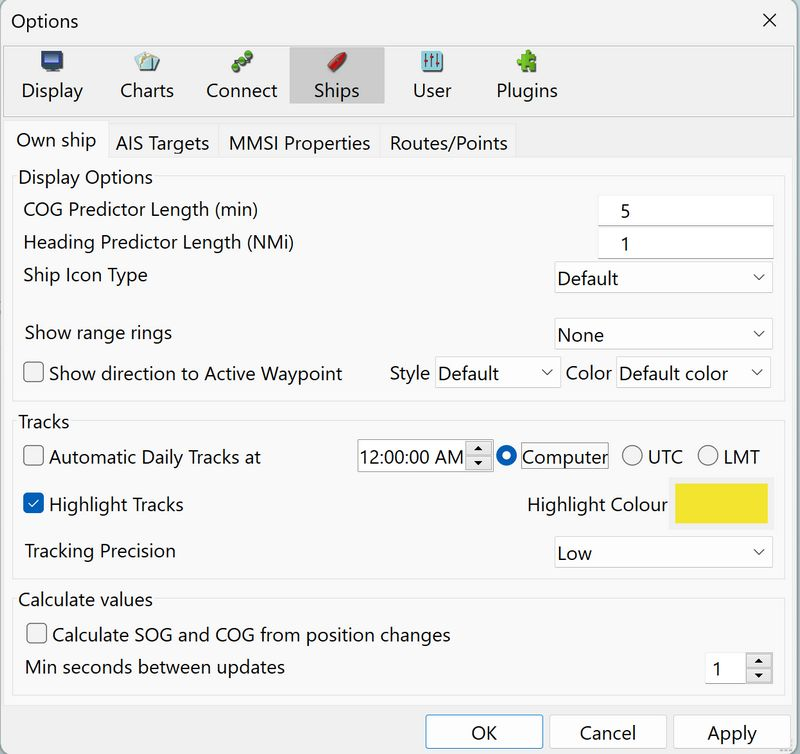
Display Options
COG Predictor Length (min)
Shows a red dashed line in front of your own boat, with present COG and ends in a small square, which represents where you will be in the set number of minutes, with the present speed. 6 minutes is a good starting value for piloting. If your vessel has a SOG of 10 knots the dashed line will be 1 nautical mile long. 60 minutes makes sense on a coastal passage and 4, 8, or 24 hours (converted to minutes) on longer blue water passages.
Heading Predictor Length (NMi)
If a heading sensor is available and outputs an NMEA data stream, this is shown as a finer line with shorter dashes ending in an open small circle. The length is set in Nautical miles.
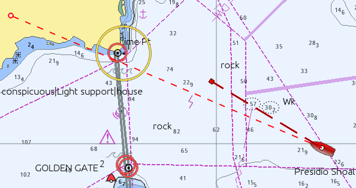
The width of the COG Predictor can be adjusted in the opencpn.ini configuration file. Find the line below and adjust the value.
OwnshipCOGPredictorWidth=3
Warning: Don’t edit the opencpn.ini (opencpn.conf) file when OpenCPN is running.
Ship Icon Type
The following options are available for Ownship:
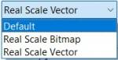
Default
This will use the icon that comes with OpenCPN, unless you have installed your own icon, "ownship.png". More about the Own Ship icon is available in User Icons Library The default Own Ship icon can be replaced by putting a file ownship.png in the User Icons shared data directory. .
Real Scale Bitmap
This option will adjust the size of the default icon, depending on your settings. When using this setting, the dialog expands and five more options related to the size of "ownship" become available. See picture below:
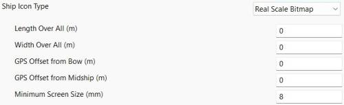
The white dot represents the set location of the GPS within Ownship.
GPS Offset from Midship (m)
The distance in meters from Ownship’s center line to its GPS antenna. Use a positive value for an offset to starboard and a negative value for an offset to port.
Real Scale Vector
Works the same as the previous option with the exception that Ownship is a somewhat boxy, computer rendered ship. It’s currently not possible to change the vector-own-ship.
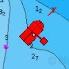
The white dot represents the set location of the GPS within Ownship.
Show range rings
These show up as red rings centered on your GPS position and can be useful in different circumstances, such as keeping clear of dangers.
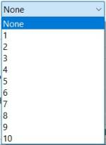
Once the number of range rings are selected and is not equal to "None", the dialog expands and shows more settings. The Distance Unit for range rings is set here, and does not follow the the global settings in Options→Display→Units. The choices are Nautical Miles and Kilometers.
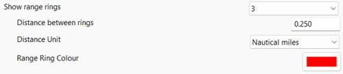
Tracks
Refer to tracks_tab for detailed information on tracking.
Automatic Daily Tracks
A track is a record of the vessel’s position as it proceeds. A trail is left behind the vessel on the chart display. The record includes distance, bearing, latitude, longitude, speed and a timestamp for each waypoint recorded.
When Automatic Daily Tracks is selected, Automatic Daily Tracking collects track-points throughout a single 24 hour period. Tracking is turned off and on again automatically to ensure that the track does not span dates. The changeover time can be configured to occur at Computer time, UTC or LMT (Local Mean Time). 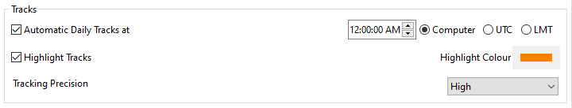
Highlight Tracks
Shows a 7-10m wide highlight on either side of the track. This is not selectable for individual tracks. The idea of the highlighting is to remind us that following a previous track exposes us to the inherent inaccuracy of GPS, and that the real track followed is most likely within the highlight region, but not necessarily in the middle. This says nothing about the accuracy of the underlying cartography, which can be even less accurate. For many charts it is prudent to assume at least 1.5mm inaccuracy on-screen, using the nominal scale of the chart. For a chart in scale 1:20,000, this translates to 30m.
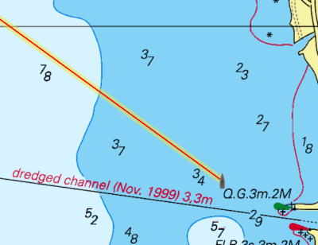
Tracking Precision
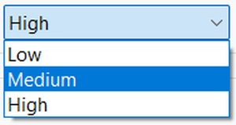
Tracking precision controls the amount of the track point data saved. It also affects the "smoothness" of the track, though this is only visible when zoomed in to a very large scale. OpenCPN uses smart, dynamic tracking that analyzes the recently acquired track points and only saves those points that actually contribute anything to the track. A straight line track, for example, is only represented by its endpoints. The process is visible in real time, close to Own Ship. The end result is good track accuracy while keeping the size small.
-
Low: Good for offshore passages.
-
Medium: Very good for all normal uses.
-
High: Only necessary when very tight maneuvering needs documenting.
Calculate Values
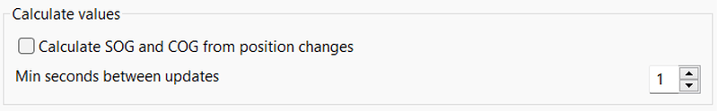
OpenCPN calculates the Speed Over Ground (SOG) and Course Over Ground (COG) from successive position updates. This option is useful if OpenCPN is not connected to the ships’s instruments and lacks SOG/COG information. It does require that OpenCPN have some GNSS source device connected. Modern, low-cost GPS receivers may supply location updates as quickly as ten times per second. To reduce computational load, OpenCPN reduces the calculation rate to 1-10 seconds between updates.